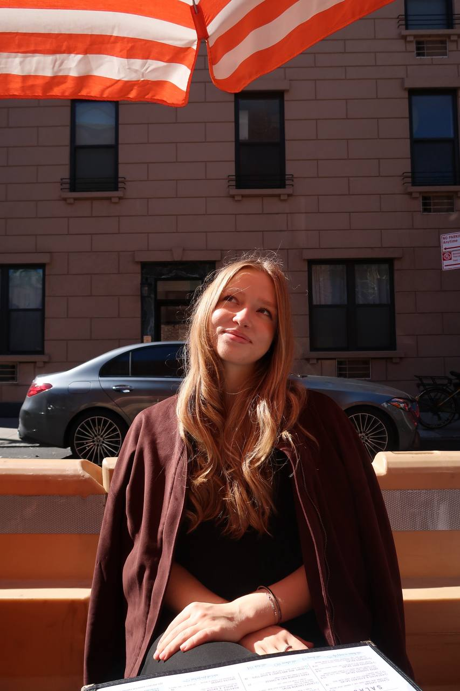

Veronica Loza is a multidisciplinary graphic designer based in New York whose practice focuses on brand
identity, editorial design, and web interactions. Originally from Russia, she is currently a research
assistant for Nika Simovich Fisher, the
President of Digital Design Collective
at Parsons. Her previous
experience includes Oscar
de la Renta, BBDO Contrapunto Russia, and a
range of
independent and freelance
projects.
Open for collaboaration and commission;)